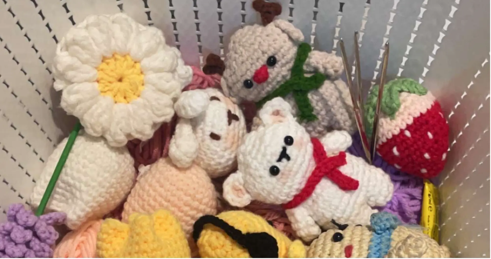
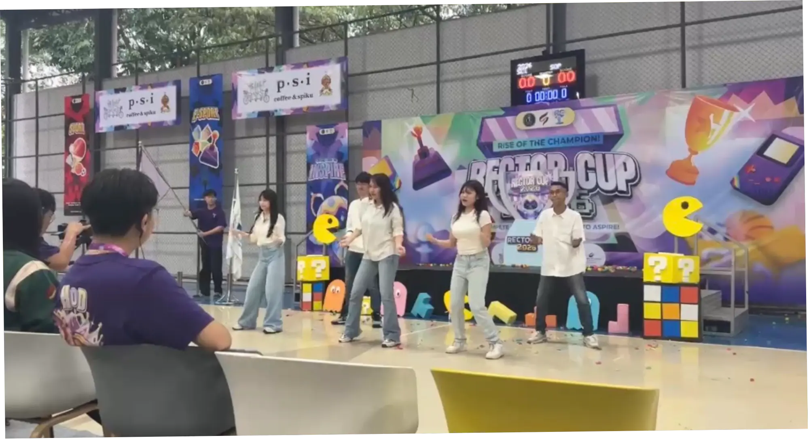
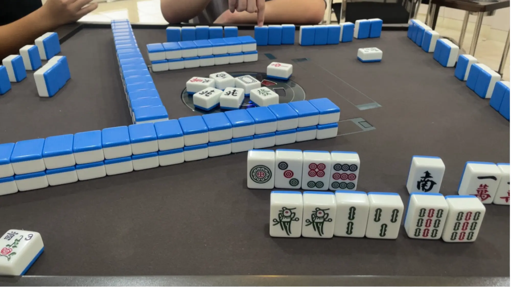

My Hobbies
Here are all the things that bring joy to my everyday life. Each hobby is a way for me to express creativity, relax, and connect with what I love!

Crochet
Crochet is one of my favorite hobbies because it helps me relax and be creative. I enjoy working with yarn and slowly turning it into something meaningful, from simple pieces to cute handmade creations. The process feels calming and helps me take a break from screens. I love that I can crochet anytime, while watching TV, listening to music, or enjoying a quiet moment—finishing a project always feels rewarding.

Dancing
Dance is a way for me to express myself when words are not enough. I enjoy exploring different styles, from contemporary to hip-hop, as each one allows me to show different sides of who I am. Dancing makes me feel free and energized, whether I am performing on stage, practicing a new move, or dancing with friends. It is more than just physical activity—it is a source of happiness, confidence, and self-expression through music and movement.

Playing Mahjong
Playing Mahjong is a hobby I enjoy because it combines strategy, focus, and social interaction. I like the challenge of thinking ahead, making decisions, and understanding patterns throughout the game. Mahjong is also a great way to spend time with others, creating moments of fun, conversation, and friendly competition. It helps me relax while keeping my mind active and engaged.

Watching K-Dramas
K-dramas are my favorite way to relax and escape into different stories and emotions. I enjoy following interesting plots, beautiful visuals, and characters that feel relatable and comforting. From romantic stories to exciting mysteries, each drama offers new perspectives and life lessons. Watching K-dramas during my free time, especially on cozy weekends, helps me unwind and enjoy simple moments.

Crafting & DIY
Crafting is something I truly enjoy because it allows me to create meaningful things with my hands. From crocheting cozy items to making handmade cards for friends, I love turning simple materials into something special. Crafting helps me slow down, stay present, and focus on the process rather than perfection. Each finished piece reflects my creativity, care, and the joy of making something personal.
Life is better with hobbies that make you smile!